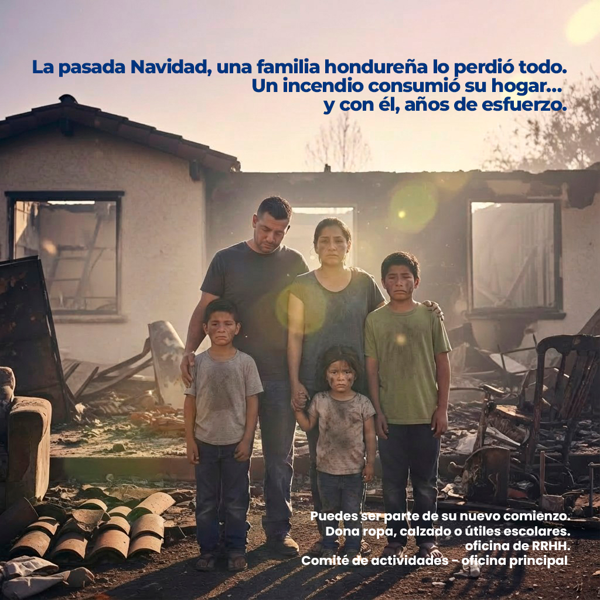
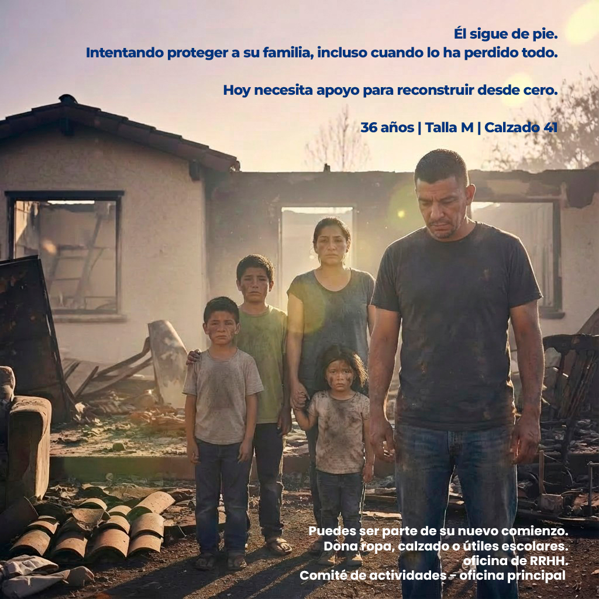
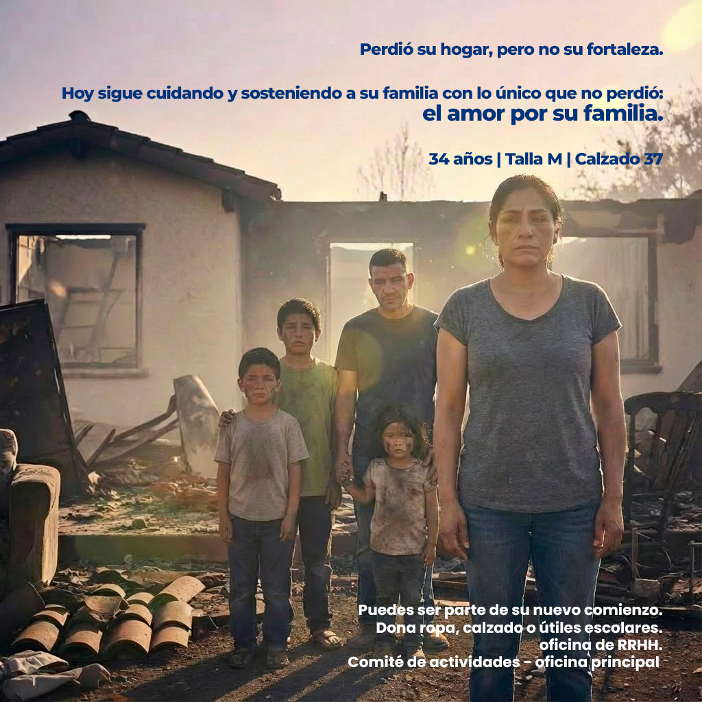
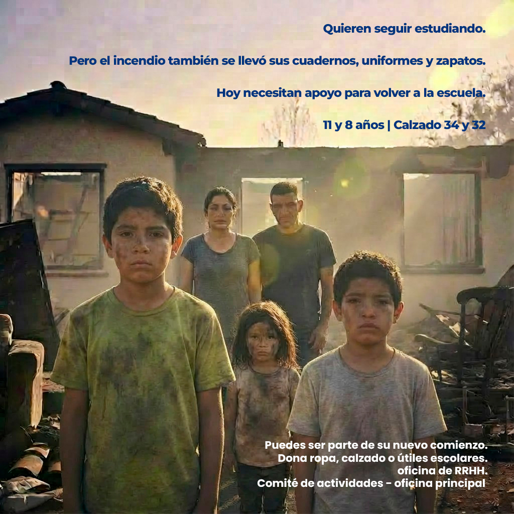
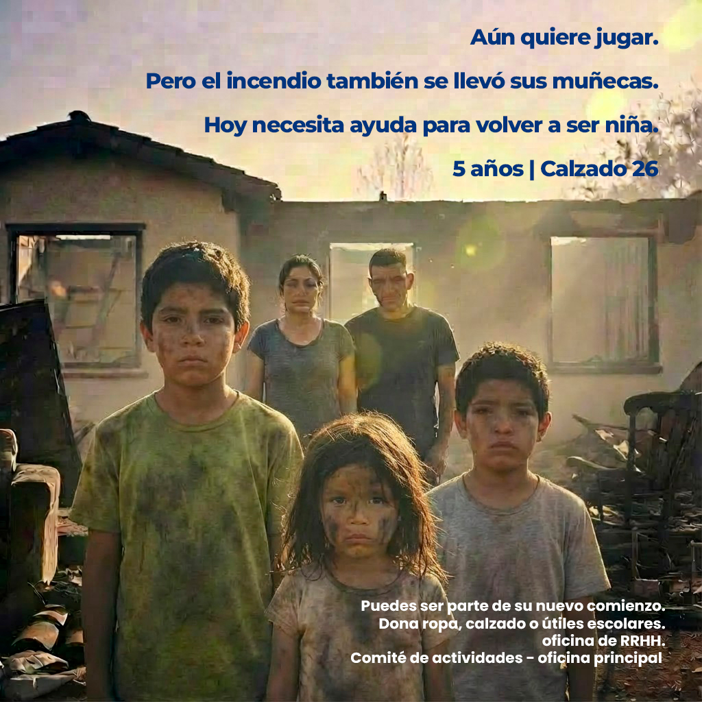
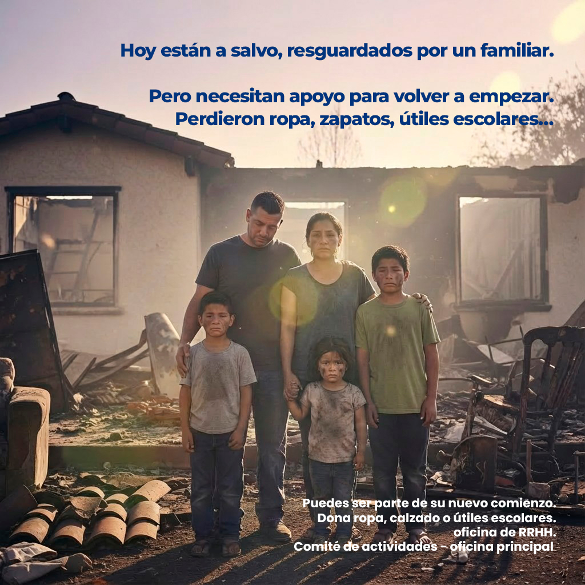

A. VarelaAnálisis de datos · Narrativa visual · HondurasDisponible para proyectos · ONGs · Agencias · Mediosandreavarela30 [arroba] gmail.comA. VarelaAnálisis de datos · Narrativa visual · HondurasDisponible para proyectos · ONGs · Agencias · Mediosandreavarela30 [arroba] gmail.com
Honduras · Dic. 2025Storytelling humanitario · Caso de estudio · Dic. 2025
A. Varela
A prueba de fuego · Storytelling humanitario · Campaña interna · 2025
Caso de estudio · Storytelling humanitario · Comunicación interna
Restricción: anonimato total · Identidad de la familia protegida
A prueba de fuego
El 24 de diciembre de 2025, una familia hondureña perdió su hogar en un incendio. El reto: movilizar apoyo interno sin exponer su identidad. La solución: cuando no se pueden mostrar nombres, se deben contar historias.
AV
A. VarelaDirección creativa · Storytelling · Conceptualización · Dic. 2025
Campaña interna · Publicada con autorización · Honduras · 2025Desplaza para leer
01El reto
Movilizar ayuda sin exponer identidades
La noche del 24 de diciembre de 2025, una familia hondureña perdió su hogar en un incendio que consumió años de esfuerzo, recuerdos y estabilidad. En medio de la tragedia, surgió un reto desde la comunicación interna: ¿cómo movilizar apoyo real — ropa, calzado, útiles escolares — sin comprometer la privacidad de una familia que ya había perdido suficiente?
La respuesta no estaba en los formularios de donación ni en los comunicados institucionales. Estaba en una premisa de comunicación estratégica: las personas no reaccionan ante necesidades generales, reaccionan ante historias específicas. Donar "ropa" es abstracto. Donar para "un niño de 8 años que quiere seguir estudiando" es emocional.
Contexto
Familia de 5 integrantes. Incendio ocurrido el 24 de diciembre de 2025. Perdieron ropa, calzado, útiles escolares y estabilidad. Estaban a salvo, resguardados por un familiar. Necesitaban apoyo para empezar de nuevo.
La restricción
Anonimato total. No se podían mostrar nombres, rostros reales ni detalles de identidad. La campaña debía proteger la dignidad de la familia mientras generaba empatía suficiente para motivar acción concreta.
Objetivo
Activar la empatía de los colaboradores para generar apoyo tangible, utilizando storytelling como herramienta principal, sin comprometer la privacidad de la familia.
Insight central
La narrativa individual genera mayor conexión emocional que los llamamientos generales. Una historia específica — con edades, tallas, necesidades concretas — convierte la compasión en acción.
02Decisiones estratégicas
Cada decisión tenía una razón
Narrativa individual→Mayor conexión emocional. Cada miembro de la familia tiene su propia historia, su propia necesidad específica.
Anonimato como recurso→Protección de identidad + enfoque en la historia. El anonimato no fue una limitación — fue el concepto.
Luz cálida en imágenes→Contraste visual entre la tragedia y la esperanza. La luz comunica que hay posibilidad de reconstrucción.
Composición frontal→Confronta al espectador emocionalmente. La mirada directa — aunque sea generada por IA — genera responsabilidad en quien observa.
Copy minimalista→Evita saturación y mantiene impacto. Menos texto = más peso emocional por palabra.
Imágenes generadas por IA→Solución ética ante la restricción de no mostrar identidades reales. Permite visualizar la historia sin exponer a nadie.
03La narrativa
Cinco historias. Una familia.
Cada integrante de la familia fue el centro de una pieza independiente. La narrativa seguía un arco progresivo: Contexto → Empatía → Necesidad → Acción. Navegá cada historia.
La narrativa de la campaña — navegá cada historia

La familia · Pieza 1 de 5
"La pasada Navidad, una familia hondureña lo perdió todo. Un incendio consumió su hogar… y con él, años de esfuerzo."
Hoy están a salvo, resguardados por un familiar. Pero necesitan apoyo para volver a empezar. Perdieron ropa, zapatos, útiles escolares…
Puedes ser parte de su nuevo comienzo. Dona ropa, calzado o útiles escolares.

El padre · Pieza 2 de 5
"Él sigue de pie. Intentando proteger a su familia, incluso cuando lo ha perdido todo."
36 años · Talla M · Calzado 41
Hoy necesita apoyo para reconstruir desde cero.

La madre · Pieza 3 de 5
"Perdió su hogar, pero no su fortaleza. Hoy sigue cuidando y sosteniendo a su familia con lo único que no perdió: el amor por su familia."
34 años · Talla M · Calzado 37
Cada prenda que dones es un gesto de solidaridad hacia alguien que no perdió la esperanza.

Los niños mayores · Pieza 4 de 5
"Quieren seguir estudiando. Pero el incendio también se llevó sus cuadernos, uniformes y zapatos."
11 y 8 años · Calzado 34 y 32
Hoy necesitan apoyo para volver a la escuela. Un cuaderno, un uniforme, un par de zapatos puede ser el primer paso.

La niña pequeña · Pieza 5 de 5
"Aún quiere jugar. Pero el incendio también se llevó sus muñecas."
5 años · Calzado 26
Hoy necesita ayuda para volver a ser niña. Porque la infancia no debería detenerse por una tragedia.
1 / 5
04Las piezas completas
La campaña en seis piezas
Cada pieza de la campaña fue diseñada para circular de forma independiente, con su propio peso narrativo. Juntas, construyen una historia completa.
PIEZA 01 · La familia

PIEZA 02 · Están a salvo
PIEZA 03 · El padre · 36 años
PIEZA 04 · La madre · 34 años
PIEZA 05 · Los niños · 11 y 8 años
PIEZA 06 · La niña · 5 años
05Resultados y ética
La comunicación se convirtió en acción
01ResultadoLa campaña logró movilizar apoyo interno, demostrando que el storytelling aplicado estratégicamente puede transformar la comunicación en acción real.
02Ética y enfoqueDesarrollado respetando el anonimato y la dignidad de la familia, evitando la exposición de identidades y priorizando una narrativa centrada en la reconstrucción, no en la victimización.
03HerramientasDirección creativa, storytelling y conceptualización. Producción visual asistida por IA. Edición y postproducción en Adobe Photoshop.
06Aprendizajes
Lo que este proyecto enseñó
Las mejores ideas no nacen con libertad total. Nacen cuando hay límites claros.
La empatía se construye con lo específico, no con lo masivo.
La gente conecta más con alguien que lucha… que con alguien que solo sufre.
Las historias no deben explicarse, deben sentirse.
Nota ética y de transparencia
Campaña interna desarrollada y publicada con autorización de la empresa. Imágenes generadas por IA. Identidad de la familia protegida. Publicado con autorización. Los nombres de los integrantes de la familia no se divulgan en ningún material de esta campaña.